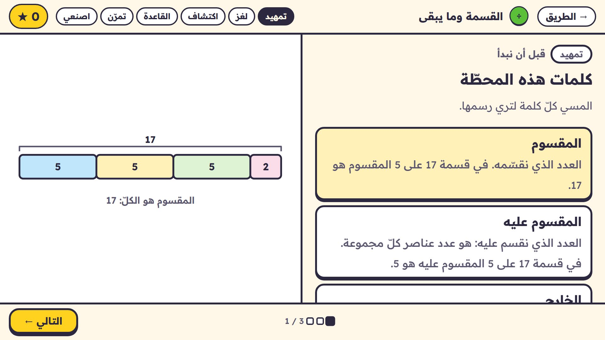
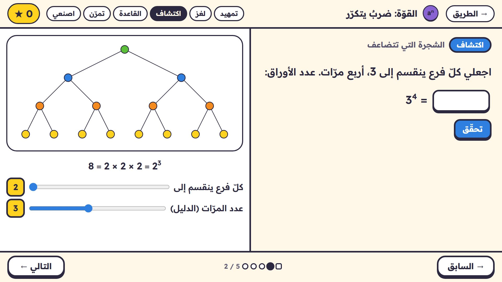
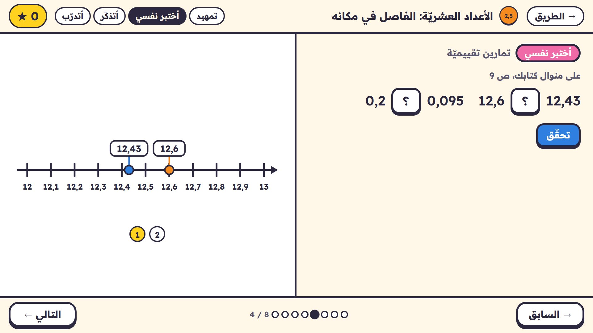
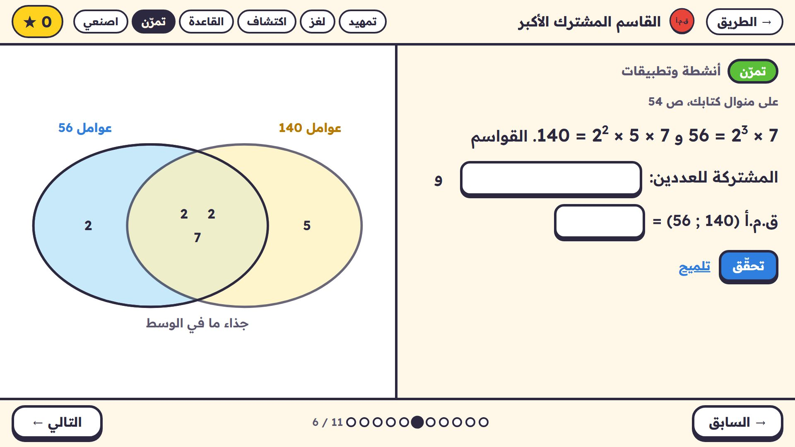
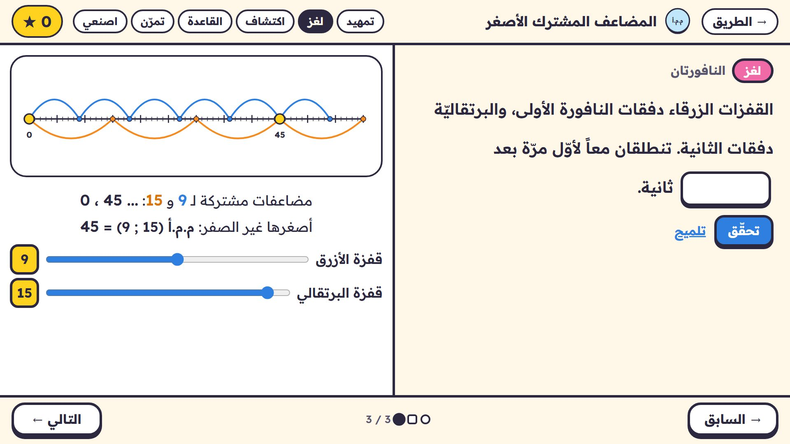

الأسلوب
القاعدة تُرى قبل أن تُقرأ
لا شيء في هذا الأسلوب من اختراعنا. هو ما اتّفق عليه من درسوا كيف يتعلّم الأطفال الرياضيّات، مرتّباً حول دروس الكتاب المدرسيّ.
المحطّة
ستّ مراحل، دائماً بالترتيب نفسه
كلّ درس من الكتاب محطّة على طريق. والمراحل ثابتة، حتّى تعرف المتعلّمة دائماً أين هي وماذا يُنتظر منها.
- تمهيدكلمات الدرس برسومها، الفكرة الكبرى، وأين نجدها في الحياة.
- لغزمسألة صغيرة تثير السؤال، قبل أيّ شرح.
- اكتشافنشاط تحرّكه بيدها حتّى ترى القاعدة تظهر.
- القاعدةمكتوبة بوضوح، بالمصطلحات التي ستجدها في كتابها وامتحانها.
- تمرّنتمارين على منوال الكتاب، ولكلّ واحد رسمه.
- اصنعيشيء تصنعه هي: لغز لأخيها، مسألة من حياتها.


الرسم
المستقيم المدرّج
للمقارنة والحصر والتقريب مجموعتان متقاطعتان
للقاسم المشترك الأكبر قافزان على خطّ الأعداد
للمضاعف المشترك الأصغر
لكلّ تمرين رسمه
نصف الشاشة للتمرين، ونصفها لرسم يُري بنيته بأعداده نفسها. الرسم يساعد على التفكير ولا يكتب الجواب: المجهول فيه دائرة صفراء.

للمقارنة والحصر والتقريب

للقاسم المشترك الأكبر

للمضاعف المشترك الأصغر
الشريط
الكلّ وأجزاؤه: للعدد الناقص وللمسائل.
المستطيل المقسوم
لتوزيع الضرب على الجمع.
سلسلة العوامل
القوّة مفتوحة: كم عاملاً فيها؟
شجرة التفكيك
العدد ينقسم حتّى أعداده الأوّليّة.
نقاط في صفوف
القسمة الإقليديّة: مجموعات كاملة وما يبقى.
جدول المراتب
الفاصل تحت الفاصل.
أشرطة الكسور
أجزاء ملوّنة من الواحد.
درج الوحدات
كلّ درجة عشر مرّات.
الخطأ
الخطأ يفتح سؤالاً
- لا وقت يجري، ولا نقاط تُخصم.
- الخطأ الشائع له جواب خاصّ به: «المساواة صحيحة، لكن بقي ما يكفي لمجموعة أخرى».
- التلميح سؤال، لا حلّ. ومن طلبت الحلّ تراه، ثمّ يعود السؤال بعد أيّام لتحلّه وحدها.
الذاكرة
ما يُسترجع يثبت
- ما حُلّ بسهولة يعود بعد أسبوع، ثمّ بعد أسبوعين.
- ما تعثّر يعود في الغد.
- ربع ساعة كلّ يوم أنفع من ساعتين في يوم واحد.
النجوم
أثر عمل، لا سباق
- ثلاث نجوم لجواب من أوّل محاولة، اثنتان بعد محاولة أخرى، واحدة بعد قراءة الحلّ.
- مستويات وأوسمة تسجّل ما أُنجز.
- لا «أرواح»، لا جوائز عشوائيّة، لا ترتيب بين أطفال، ولا شيء يضيع إن غابت يوماً.
المختبر
عايشة تحسب، وهي تسأل
- عايشة رفيقة المختبر: تُسأل بالعربيّة، وتجيب بجملة ورسم وصوت. تعمل على الجهاز وحده.
- تحت كلّ جواب سطر Softanza الذي يسأل السؤال نفسه. ثمّ تحدّيات: اقرئي السطر، ركّبيه بالبلاطات.
- أسئلة بحث مفتوحة: ما أصغر عدد له عشرة قواسم بالضبط؟
- هكذا يعمل الرياضيّون اليوم: يجرّبون، يلاحظون، ثمّ يبرهنون.
المراجع
على أكتاف من؟
كلّ اختيار في المنصّة له أصل في البحث التربويّ.
| من | ما أخذناه | |
|---|---|---|
| Bruner، ومناهج سنغافورة | المحسوس ثمّ الصورة ثمّ الرمز. ومنه نموذج الشريط والرسم بجانب كلّ تمرين. | |
| Papert و Bret Victor | الطفل يفهم ما يبنيه ويحرّكه. ومنه النشاطات التي تُجرَّب باليد. | |
| Conrad Wolfram | الحاسوب للحساب، والإنسان للسؤال والحكم. ومنه المختبر. | |
| Pólya | التلميح الجيّد سؤال. ومنه سلّم التلميحات. | |
| Kapur و Dan Meyer | اللغز قبل الشرح: من حاول أوّلاً يفهم الشرح أحسن. | |
| Boaler | الخطأ جزء من التعلّم، والسرعة ليست ذكاءً. لا مؤقّت في المنصّة. | |
| بحوث الاسترجاع المتباعد | ما نسترجعه بعد أيّام يثبت. ومنه «مراجعة اليوم». | |
| Sweller | الرسم والنصّ في الشاشة نفسها، لا في صفحتين. | |
| Deci و Ryan | الرغبة تأتي من الفهم والاختيار، لا من الجائزة. لذلك النجوم أثر لا عملة. |